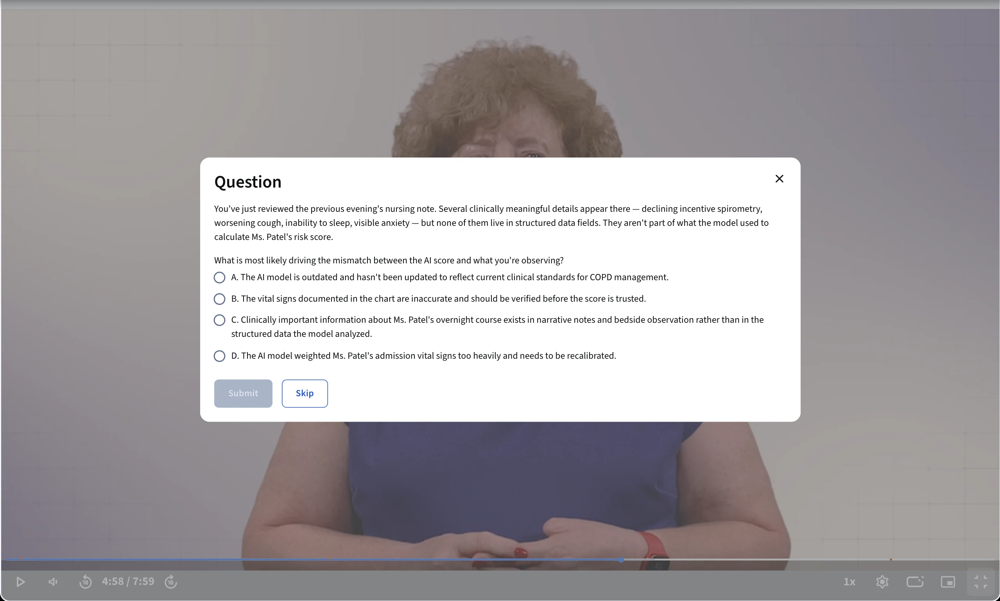

AI for Nurses is a three-course Coursera Specialization from the Duke University School of Nursing, funded by a Johnson & Johnson grant. It helps registered nurses, nursing assistants, LPNs, and nurse administrators connect AI concepts to everyday clinical practice, with a focus on quality and safety. As Senior Learning Experience Designer and Project Manager, I led the design and development with three faculty, from survey data and a co-design session with nurses through launch in September 2026.
- Launched
- September 2026
- Credit
- Up to 9 nursing CE hours
- Scope
- 3 courses, 14 modules
- Next
- Second year funded
Three learning examples

Three design decisions to support learning
- Start from what nurses already see on a shift.In a co-design session I developed and facilitated, registered nurses described AI as something flagged, summarized, prioritized, or triggered. Those four patterns carry through all three courses.
- Build from seeing, to evaluating, to applying.Course 1 helps nurses recognize where AI appears in practice, Course 2 helps them evaluate what an output is telling them, and Course 3 has them practice using that understanding in clinical situations.
- Pair short expert videos with practice that has a clinical moment.Faculty videos stay under seven minutes. In Course 3, case study videos pause three times so nurses make a real-time clinical judgment, and each course ends with a capstone drawn from the nurse’s own workflow.
Want the details?
About the project, courses, and team
This project started with a gap. Faculty at the Duke University School of Nursing noticed that as more healthcare tools become AI-enabled, nurses are feeling pressure to learn and adapt on the fly. Often a new AI tool appears in their workflow with minimal explanation of how it got there, what it does, or how they should engage with it. Other times, nurses have been working with AI all along, but it isn’t obvious; it just feels like part of their systems.
With support from a Johnson & Johnson grant, I led the design and development with three School of Nursing faculty to create a design vision for the first of three Specializations on Coursera. With the gap in mind, we co-designed a three-course series that sets the foundation for all nurses working with AI in their workflow.
We kicked off in September 2025, and the Specialization launched in September 2026.
The learning progression and objectives
Survey data from working nurses and conversations with partners shaped a progression I shared early with stakeholders. Because the Specialization is accredited for nursing continuing education, accreditation requirements also informed design decisions along the way.
- Identify common AI tools used in nursing workflows.
- Explain how AI systems transform clinical data into outputs.
- Distinguish between rule-based systems, machine learning models, predictive AI, and generative AI.
- Describe how healthcare organizations select and govern AI tools.
- Explain how AI models learn from historical healthcare data.
- Interpret common AI outputs with appropriate confidence and skepticism.
- Identify situations where AI tools may perform poorly.
- Recognize how bias can emerge from historical data and healthcare system patterns.
- Apply the AI-SBAR framework to interpret and communicate AI-informed clinical concerns.
- Integrate AI outputs with patient assessment, clinical context, patient goals, and nursing judgment.
- Respond appropriately when AI outputs align with or conflict with bedside observations.